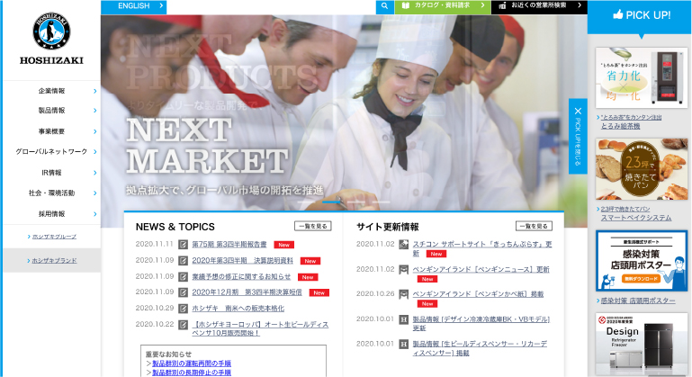

HACCP義務化の罰則を簡潔に解説。ハサップ未対応だとどうなる？
2021年6月1日より法律でHACCPが完全義務化されます。
今までも、保健所職員さんが指導に来たけど、無視してても罰則無かった
し、やってなくてもバレないのかもなんて思っていませんか？
いえいえ法律です。法律を守らなければ罰則があります。
HACCP義務化の罰則
厚生労働省のホームページに
『HACCP（ハサップ）に沿った衛生管理の制度化』として制度化の内容が詳しく説明されています。
衛生管理の実施状況については、これまでと同様、営業許可の更新時や保健所 による定期的な立入等の機会に、食品衛生監視員が確認を行います。新制度 ですので、当面の間は、導入の支援・助言が中心となります。分からない点は食品 衛生監視員に相談しながら進めてください。
引用: 厚生労働省ホームページ簡単に説明すると、2021年6月1日より営業許可の新規申請時、更新時には『衛生管理計画書』と『実施記録』が必要です。
営業許可制度の見直し及び営業届出制度の創設
2021年6月1日より、『営業許可制度及び営業届出制度』が変わります。
それに伴って『施設管理基準』が変わり、今までよりも厳しくなります。
例えば、手洗い設備を設置、食品を保管できる冷蔵冷凍庫の設置、汚水や廃棄物の処理、カビや結露防止、ねずみや昆虫の駆除・・・・などなど、要求項目は文字数にして3倍、食品を取扱う環境の整備も今までよりも基準が厳しくなり、『汚くて旨い店』では営業出来なくなるという事になります。
会社名が入ります。
HACCP先生の
一番目のおすすめ
| 本社住所 | 住所が入ります。住所が入ります。住所が入ります。 |
| 本社住所 | 全国(北海道、沖縄、離島を除く) |
| 本社住所 | http://www.toho-kk.co.jp/ |
テキストが入ります。テキストが入ります。テキストが入ります。テキストが入ります。テキストが入ります。テキストが入ります。テキストが入ります。テキストが入ります。
まとめ
あなたの対応次第で営業禁停止になります。更に悪質な場合、罰金や懲役などの刑が科せられる可能性があります。食品衛生は食品を取扱う事業者にとって必須で、出来ないのであれば食品を取扱わない事が重要です。


HACCP導入のトータルサポートが
できるおすすめ業者
小規模事業者におすすめ！
-
1

引用: アース環境サービス株式会社アース環境サービス株式会社
害虫駆除や清掃など環境衛生を専門とする企業。「総合環境衛生管理」を理念とし、食品工場から一般家庭まで幅広くサポート。衛生環境の診断から総合的な支援の仕組みを構築しており、特に環境衛生が重要な小規模事業者にお勧めです。
小〜中規模事業者におすすめ！
-
2
引用: 東邦電気工事株式会社
東邦電気工事株式会社
空調設備が得意な設備施工会社。食品工場の様々なご相談を頂くなかで、ハード面だけでは無くソフト面のサポートも必要と、自社にHACCPの専門部門を設置しハード面・ソフト面をバランス良くサポート。中規模の食品加工事業者様にお勧めです。
大規模事業者におすすめ！
-
3
引用: 創実ファシリティーズ
創実ファシリティーズ
長年、食品製造施設で培ったノウハウをもとにHACCPハードプランのコンサルティング・レイアウト設計・施工業務は看板業務として、民間認証取得サポートなどのソフト面のサポートも積極的に行っています。大型食品加工事業者にお勧めです。